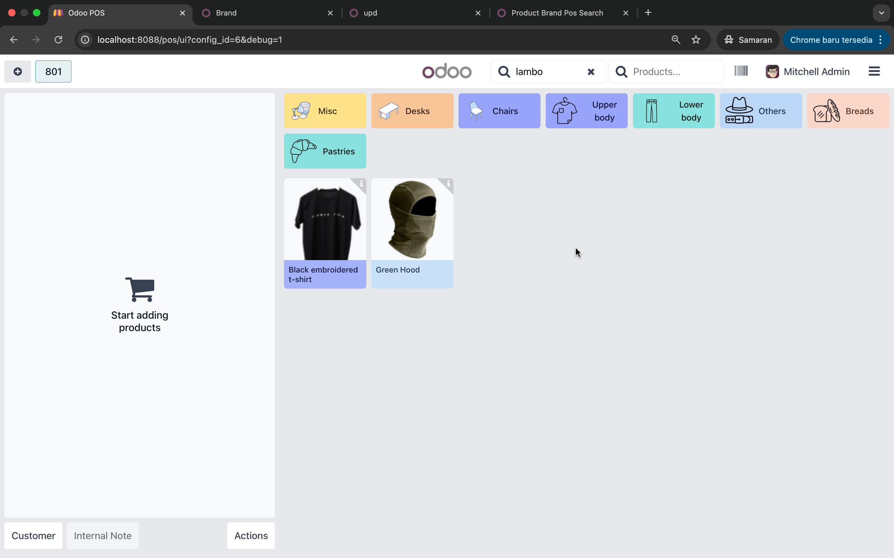
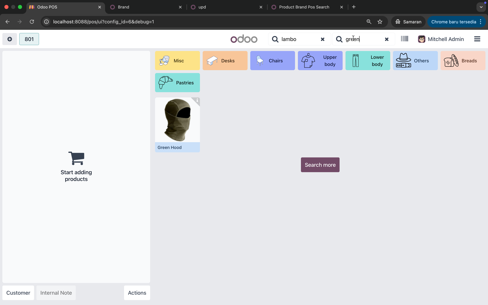

1) Searching by Brand Only
Type a brand (e.g. lambo) — the POS shows only products from that brand.

Enhance Odoo POS search with Brand filtering and combined Brand + Product Name / Barcode / Reference Search.
Product Brand POS Search extends Odoo's Point of Sale ProductScreen to allow quick filtering by Brand in addition to product name, default code, and barcode. It supports combining brand and product search for faster product lookup during POS operations.
The module patches ProductScreen from Odoo POS frontend, adding new getters like searchBrand and improving productsToDisplay logic to handle brand + Product Name / Barcode / Reference filtering.
patch(ProductScreen.prototype, {
get searchBrand() { return this.pos.searchBrandWord.trim(); },
get productsToDisplay() { /* brand + name logic */ },
});Type a brand (e.g. lambo) — the POS shows only products from that brand.

Combine brand and product name (e.g. lambo + green) for precision filtering.

notes : you need install product brand oca 18 https://apps.odoo.com/apps/modules/18.0/product_brand